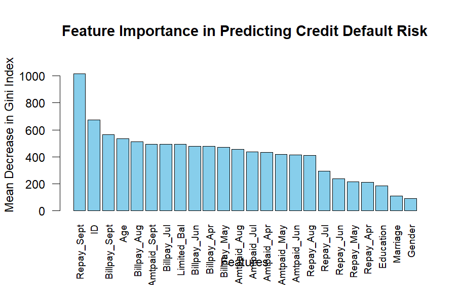
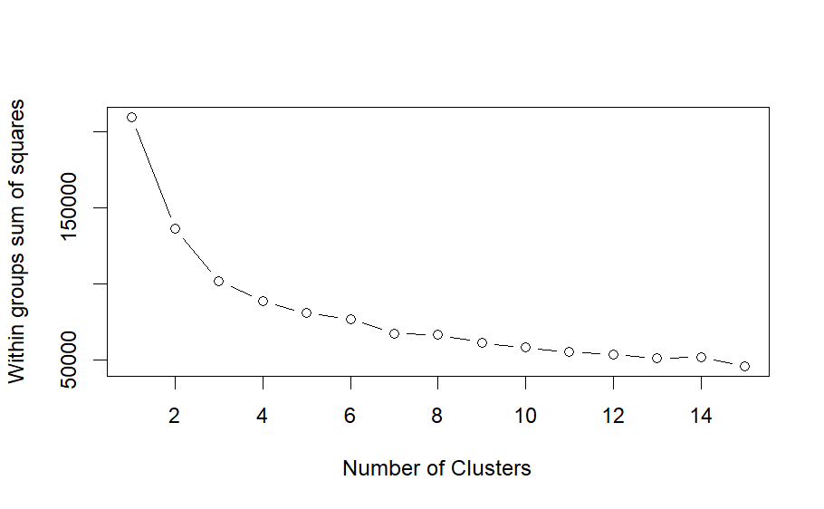
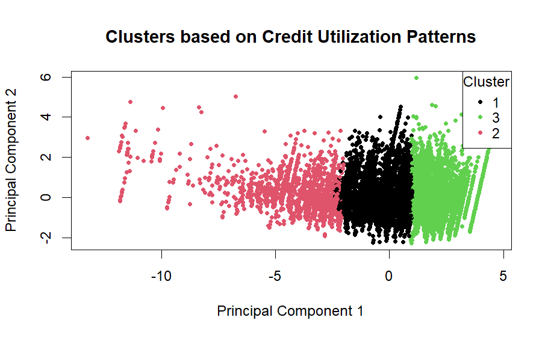

Confusion Matrix and Statistics
predicted_classes Default Not Default
Default 1508 6795
Not Default 482 214
Accuracy : 0.1914
95% CI : (0.1833, 0.1996)
No Information Rate : 0.7789
P-Value [Acc > NIR] : 1
Kappa : -0.0991
Mcnemar's Test P-Value : <2e-16
Sensitivity : 0.75779
Specificity : 0.03053
Pos Pred Value : 0.18162
Neg Pred Value : 0.30747
Prevalence : 0.22114
Detection Rate : 0.16757
Detection Prevalence : 0.92266
Balanced Accuracy : 0.39416
'Positive' Class : Default
Research
Research Question 1:
Do certain demographic groups have a higher or lower likelihood of defaulting on credit card payments?
Methodology:
Regression Model: This methodology involves using logistic regression to analyze the likelihood of defaulting on credit card payments based on demographic variables.
Data Preprocessing:
Categorical variables such as Gender, Education, Marriage, and default_payment_next_month are converted to factors to ensure compatibility with the regression model.
Exploratory Data Analysis (EDA):
Visualizations are created to explore default payments across different demographic groups. This step helps to understand any patterns or trends in default behavior based on demographic characteristics.
Data exploration is performed using visualization to understand the distribution of default payments across different demographic groups. This is achieved through the creation of a bar plot (‘plot1’) using ‘ggplot2’ library.

Model Training:
- The dataset is split into training and testing sets using the ‘createDataPartition()’ function from the ‘caret’ library. This ensures that the model is trained on a subset of the data and evaluated on unseen data.
- A logistic regression model (‘logit_model’) is trained using the ‘glm()’ function. Logistic regression is a common method for binary classification tasks like predicting default payments.
Model Evaluation:
- Predictions are made on the test set using the trained logistic regression model.
- Predicted classes are determined based on the probability thresholds (in this case, 0.5) using an ifelse statement.
- The confusion matrix is generated using the ‘confusionMatrix()’ function from the caret library. This matrix provides insights into the performance of the model, including metrics such as accuracy, sensitivity, specificity, etc.
Interpretation:
The graph visually dissects default payment statuses across gender, education, and marital status combinations, offering valuable insights into default likelihoods across different demographic groups. It reveals trends suggesting that males may exhibit slightly higher default rates in certain contexts. Higher education levels, particularly advanced degrees, are associated with lower default rates, while lower education levels show higher default frequencies, especially among singles. Marital status nuances also influence default propensity, with married individuals, especially those with advanced degrees, displaying lower default rates. Certain combinations, like high school education and single status, appear more vulnerable to defaults. Overall, the graph provides detailed statistical representations enabling nuanced analysis of default trends within micro-demographics.
In conclusion, certain demographic groups indeed have a higher or lower likelihood of defaulting. Males in several panels, individuals with lower educational attainment, and singles are more prone to defaulting. Conversely, those with advanced degrees, particularly when married, show a lower likelihood of default. These insights are critical for credit risk management, allowing for tailored risk assessment strategies and targeted financial advice or product offerings to mitigate potential defaults.
Research Question 2:
Which features are deemed most important in predicting credit default risk?
Methodology:
Random Forest Model: This methodology involves training a Random Forest model, extracting variable importance measures, sorting them, and then visualizing the feature importance to gain insights into which features are most important in predicting credit default risk.
Setting Seed for Reproducibility:
Setting a seed (set.seed(1234)) ensures that the random number generation during model training is reproducible. This means that if you rerun the code with the same seed, you should get the same results.
Training the Random Forest Model:
The randomForest function is used to train a Random Forest model. This function requires specifying the formula for the model, where default_payment_next_month ~ . indicates that default_payment_next_month is the target variable, and . indicates that all other variables in the dataset are used as predictors.
Variable Importance Measures: The importance function is applied to the trained Random Forest model (rf_model) to obtain variable importance measures. Variable importance provides insights into which predictor variables are most influential in predicting the target variable (credit default risk). The measure used here is the Mean Decrease in Gini Index. The obtained variable importance measures are sorted in descending order using the order function. Sorting helps in identifying the most important predictor variables at the top of the list.
Repay_Sept ID Billpay_Sept Age Billpay_Aug Amtpaid_Sept
1018.32726 672.52568 563.75433 534.11658 512.46432 493.17382
Billpay_Jul Limited_Bal Billpay_Jun Billpay_Apr Billpay_May Amtpaid_Aug
491.20440 490.99607 478.71140 476.84633 469.35011 455.75366
Amtpaid_Jul Amtpaid_Apr Amtpaid_May Amtpaid_Jun Repay_Aug Repay_Jul
436.19727 433.73568 417.53178 413.28457 410.82039 291.82828
Repay_Jun Repay_May Repay_Apr Education Marriage Gender
234.61829 214.68302 210.96277 184.38949 109.52670 88.19018 The sorted variable importance measures are printed to the console like above, allowing you to see the importance values of each predictor variable.

Feature Importance:
- After obtaining the variable importance measures, the code further processes them to extract the importance values and corresponding feature names.
- The importance values are sorted in descending order, and the corresponding feature names are ordered accordingly.
- This plot provides a graphical representation of each feature’s importance in predicting credit default risk, making it easier to interpret and identify the most influential features.
Conclusion: The insights gained from this analysis can inform credit risk assessment processes and aid in the development of more accurate predictive models for credit default risk.
Interpretation:
The bar chart illustrates the importance of various features in predicting credit default risk, with repayment status in September (Repay_Sept) emerging as the most critical predictor. This highlights the significance of recent financial behaviors in forecasting default likelihood. The model also emphasizes the importance of bill amounts and repayment statuses in other months, underscoring the value of consistent financial habits over time. Conversely, demographic features like Gender, Education, and Marriage have lesser impact, suggesting that behavioral factors outweigh demographic variables in predicting default risk. These insights enable financial institutions to refine their risk assessment models, tailor monitoring strategies, and develop targeted interventions for customers exhibiting risky financial behaviors.
In summary, the Random Forest model identifies repayment statuses, particularly the most recent ones, and bill amounts as the most informative features for predicting credit default risk. This aligns with the notion that recent and consistent financial behaviors provide a clearer picture of a customer’s financial health than static demographic data. This insight is invaluable for developing more effective risk assessment tools and customer management strategies in the financial sector.
Research Question 3:
Identify the distinct patterns of credit limit utilization among users.
Methodology:
Clustering: The methodology to answer the above question involves several key steps for clustering users based on their patterns of credit limit utilization.
Data Selection:
Relevant columns related to credit limit utilization are chosen from the dataset. These columns typically include variables representing the repayment behavior across different months.
Data Standardization:
The selected data is standardized to ensure that all variables have a mean of 0 and a standard deviation of 1. This process, known as z-score normalization, is essential for clustering algorithms like K-means, as it prevents variables with larger scales from dominating the analysis.
Determining Optimal Number of Clusters:
The code employs the “elbow method” to determine the optimal number of clusters. This method involves calculating the within-cluster sum of squares for different numbers of clusters and plotting these values. The point where adding more clusters does not significantly decrease the within-cluster sum of squares indicates the optimal number of clusters.
Performing K-means Clustering:
Once the optimal number of clusters is determined, the K-means algorithm is applied to the standardized data. K-means is an iterative algorithm that partitions the data into the specified number of clusters by minimizing the within-cluster variance. Assigning Cluster Labels: Each user is assigned a cluster label based on the results of the K-means clustering algorithm. These labels represent the cluster to which each user belongs.
Adding Cluster Labels to the Dataset:
The cluster labels are added back to the original dataset, allowing for further analysis and interpretation of the clustering results.
Visualizing Cluster Centers:
The code performs Principal Component Analysis (PCA) on the cluster centers to reduce the dimensionality of the data. PCA transforms the high-dimensional cluster centers into a lower-dimensional space while preserving the most important information. The reduced-dimensional data is then visualized to gain insights into the distinct patterns of credit limit utilization among different clusters.
Overall, this methodology enables the identification of meaningful patterns in credit limit utilization behavior and provides insights into how users can be grouped based on these patterns.
Interpretation:
The images and corresponding data processing steps describe the utilization of K-means clustering to identify distinct patterns of credit limit utilization among users based on multiple credit-related behaviors.
Elbow Plot:
The elbow plot is used to determine the optimal number of clusters by showing the within-groups sum of squares (WSS) for different numbers of clusters. This metric measures the compactness of the clusters, with lower values generally indicating better clustering (less spread within the clusters).

Key Observations from the Elbow Plot:
A sharp decline in WSS from 2 to 3 clusters suggests significant improvements in cluster compactness with the addition of clusters in this range. The curve begins to flatten around 3 clusters, suggesting diminishing returns on improvement in cluster compactness with additional clusters. This is a typical indicator used to select the optimal number of clusters; in this case, it suggests that 3 clusters may be suitable. Second Image: PCA Plot of Clusters The second image displays a scatter plot of the first two principal components of the standardized data, colored by the assigned cluster labels (1, 2, 3). This visualization helps in interpreting the spatial distribution of clusters in the reduced dimensionality space.
PCA Plot of Clusters:
The below graph displays a scatter plot of the first two principal components of the standardized data, colored by the assigned cluster labels (1, 2, 3). This visualization helps in interpreting the spatial distribution of clusters in the reduced dimensionality space.

Key Observations from PCA Plot:
Cluster 1 (Pink): This cluster is distinctly positioned towards the positive side of the second principal component. This might indicate a specific pattern of credit utilization or repayment behavior that separates this group from the others.
Cluster 2 (Green): Occupying the middle ground in the plot, this cluster shows moderate values on both principal components. This could suggest an average credit behavior compared to the extremes exhibited by the other two clusters.
Cluster 3 (Black): Concentrated primarily in the center and negative side of the first principal component, this cluster could represent users with lower credit utilization or more consistent repayment behaviors compared to the others. Identifying Distinct Patterns of Credit Limit Utilization Based on the clustering analysis, three distinct patterns of credit utilization among users can be identified:
High Utilization/Erratic Repayment: Likely represented by Cluster 1, these users might be utilizing their credit limits to a high extent and might have more volatile repayment histories. Moderate Utilization/Stable Repayment: Cluster 2’s positioning suggests users in this group have moderate credit utilization and more stable repayment patterns. Low Utilization/Consistent Repayment: Cluster 3 could be indicative of users who use their credit limits conservatively and maintain consistent repayment behaviors.
Conclusion:
These clusters help in understanding the different strategies and financial behaviors of credit card users, which can be crucial for credit risk management and marketing strategies tailored to different consumer segments. By recognizing these distinct patterns, financial institutions can better cater to the varying needs and risks associated with different groups of users.